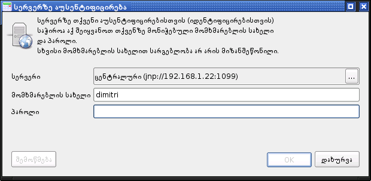

ნახ. 1 ოპციების დიალოგის გამოძახება
ნახ. 1 ოპციების დიალოგის გამოძახებაბიზნეს ცენტრის განსასაზღვრათ შეასრულეთ ბრძანება ფაილი > ოპციები და თვისებები (ნახ. 1).
ნახ. 1 ოპციების დიალოგის გამოძახება
გამოსულ ფანჯარაში, მარცხნივ განლაგებულ ხის შტოზე აარჩიეთ Recalculation Utility > Reports და ველში ბიზნეს ცენტრი მიუთითეთ თქვენი ბიზნეს ცენტრის დასახელება (მაგ. ცენტრალური, დელისი, მთაწმინდა და ა.შ.). ამ სახელს სისტემა გამოიყენებს შესაბამის რეპორტებში, რომელიც მითითებული ბიზნეს ცენტრის სახელით გამოიწერება. პროგრამის განახლებისას უნდა შეავსოთ ეს ველი ხელახლა (თუმცა შეგიძლიათ ძველი პროგრამის ოპციების გადმოტანა ავტომატურად, შესაბამისი ფაილების გადმოწერით, მაგრამ აქ ამ საკითხს არ ვიხილავთ).
ნახ. 2 ბიზნეს ცენტრის მითითება
JBoss პროგრამული სერვერი წარმოადგენს საუკეთესო საშუალებას გადათვლის უტილიტთან სამუშაოდ. მისი ძირითადი უპირატესობა მდგომარეობს იმაში, რომ გადათვლის ბირთვი ყოველთვის უახლესი ვერსიისაა. თუმცა ახალი პროცედურების თანახმად რეგიონებს არ ექნებათ JBoss პროგრამულ სერვერთან მუშაობის საშუალება. ერთადერთი, რისი გაკეთებაც შეიძლებოდეს იქნება რეგიონიდან არის ცენტრალურ სერვერზე გადათვლების გადმოგზავნა. ამიტომ რეგიონის მთავარმა ოპერატორმა უნდა იცოდეს JBoss სერვერთან მიერთება, მიუხედავად იმისა რომ მასზე უშუალოდ არ იმუშავებს.
1) JBoss პროგრამულ სერვერთან დასაკავშირებლად გამოიყენეთ ბრძანებები ფაილი > აუსენტიფიცირება. გამოსულ აუსენტიფიცირების ფანჯარაში (ნახ. 3) დააწკაპეთ ველი სერვერი მარჯვენა ბოლოში მდებარე ღილაკს სამწერტილით.
 ნახ. 3 აუსენტიფიცირების ფანჯარა
2) გამოსულ ფანჯარაში სერვერის არჩევა დააწკაპეთ ღილაკს ახალი სერვერი. სისტემა შეგეკითხებათ სერვერის ტიპს, რომელთანაც გინდათ დაკავშირება. აარჩიეთ სიიდან JBoss პროგრამული სერვერი და შემდეგ OK.
ნახ. 4 JBoss სერვერის თვისებები
3) შეავსეთ ფომის ველები. სახელის ველში შეგიძლიათ ნებისმიერი რამ ჩაწეროთ, რითიც თქვენ თავად მომავალში აღიდგენთ მეხსიერებაში თუ რომელ სერვერთან გაქვთ საქმე. თუ მაგალითად ცენტრალურ სერვერს უკავშირდებით, მიუთითეთ სახელის ველში "ცენტრალური", თუმცა არავინ გზღუდავთ სხვა სახელი რომ მიუთითოთ.
4) მანქანის მისამართის ველში მიუთითეთ სერვერის მანქანის მისამართი. ცენტრალური სერვერის მანქანის მისამართია 192.168.1.22. უახლოეს მომავალში ეს მისამართი სავარაუდოდ არ შეიცვლება ან, თუ შეიცვლება, სავარაუდოა, რომ ყველას ეცნობება ამის შესახებ.
5) პორტის ველში მიუთითეთ 1099. ეს პარამეტრი შეგიძლიათ მუდმივ სიდიდედ მიიჩნიოთ. ნაკლებად სავარაუდოა რომ მისი ცვლილება ოდესმე დაგჭირდეთ. თუმცა რომ რამე იყოს, ამის საშუალებაც არის.
6) როდესაც ყველა ველს შეავსებთ დააწკაპეთ OK ღილაკზე და სერვერი უნდა მოინიშნოს სერვერის არჩევის ფორმაში. კიდევ ერთი OK და ახალი სერვერი ამოგივათ სერვერის ველში აუსენტიფიცირების ფორმაში. შეიყვანეთ თქვენი მომხმარებლის სახელი და პაროლი და თუ ყველაფერი სწორად გააკეთეთ და ქსელიც მუშაობს კავშირის დამყარებას არაფერი უდგას წინ.
Oracle მონაცემთა ბაზის სერვერთან მუშაობა არ არის რეკომენდირებული ხერხი გადათვლის უტილიტთან მუშაობისა, ვინაიდან ამ დროს გადათვლის ბირთვი შესაძლოა ძალიან მოძველებული იყოს. თუმცა რეგიონების შემთხვევაში, ახალი პროცედურების მიხედვით, ეს ერთადერთი საშუალებაა.
რათა ეს ნაკლი მეტნაკლებად დავაკომპენსიროთ, რეკომენდირებულია გადათვლის უტილიტის უახლეს ვერსიამდე რეგულარულად განახლება http://192.168.1.22:8080/recutil საიტიდან.
რეგიონის ოპერატორებმა უნდა იცოდნენ თუ როგორ დაუკავშირდენ Oracle მონაცემთა ბაზის სერვერს გადათვლის უტილიტიდან. ეს ბაზა, როგორც წესი, არის მათი რეგიონის მონაცემთა ბაზა.
1) ეს ნაბიჯი ანალოგიურია 1) ნაბიჯისა წინა განყოფილებიდან.
2) გამოსულ ფანჯარაში სერვერის არჩევა დააწკაპეთ ღილაკს ახალი სერვერი. სისტემა შეგეკითხებათ სერვერის ტიპს, რომელთანაც გინდათ დაკავშირება. აარჩიეთ სიიდან JBoss პროგრამული სერვერი და შემდეგ OK.
3) ეს ნაბიჯი ანალოგიურია 3) ნაბიჯისა წინა განყოფილებიდან.
4) მანქანის მისამართის ველში მიუთითეთ თქვენი Oracle მონაცემთა ბაზის სერვერის მისამართი. ქვემო მოყვანილ ცხრილში მოცემულია ამჟამინდელი სურათი იმისა თუ რომელ ბიზნეს-ცენტრში რომელი მისამართი გამოიყენება.
5) პორტის და სერვერის ველები დატოვეთ უცვლელი. პორტის მნიშვნელობა 1521 და სერვისის სახელი orcl უმეტესობა შემთხვევაში მუშაობს. გამონაკლისი შემთხვევის დროს უნდა მიმართოთ სისტემის ადმინისტრატორს რათა ზუსტი მნიშვნელობები გაიგოთ.
| კოდი | მდებარეობა | მისამართი | ტიპი |
| 00 | ცენტრალური | 192.168.1.22 | JBoss |
| 01 | ვარაზისხევი | 192.168.22.2 | Oracle |
| 02 | ჩუღურეთი | 192.168.34.2 | Oracle |
| 03 | ლოტკინი | 192.168.45.2 | Oracle |
| 04 | ოქროსუბანი | 192.168.32.2 | Oracle |
| 05 | სანზონა | 192.168.44.2 | Oracle |
| 06 | ავჭალა | 192.168.43.2 | Oracle |
| 07 | ისანი | 192.168.14.2 | Oracle |
| 08 | კრწანისი | 192.168.35.2 | Oracle |
| 09 | საბურთალო | 192.168.25.2 | Oracle |
| 10 | გლდანი | 192.168.42.2 | Oracle |
| 11 | ავლაბარი | 192.168.11.2 | Oracle |
| 12 | ვარკეთილი | 192.168.17.2 | Oracle |
| 13 | დიდუბე | 192.168.49.2 | Oracle |
| 14 | დიდი დიღომი | 192.168.26.2 | Oracle |
| 15 | სამგორი | 192.168.18.2 | Oracle |
| 16 | დელისი | 192.168.23.2 | Oracle |
| 17 | მთაწმინდა | 192.168.33.2 | Oracle |
6) ეს ნაბიჯი ანალოგიურია 6) ნაბიჯისა წინა განყოფილებიდან.
გადათვლის ძებნის ფორმის გამოსაძახებლად გამოიყენეთ ბრძანებათა მიმდევრობა გადათვლა > გადათვლის ძებნა (ნახ. 5).
ნახ. 5 გადათვლის ძებნის ფორმის გამოძახება
გამოსულ ფანჯარაში (ნახ. 6) მიუთითეთ თქვენთვის საინტერესო თარიღი და თუ რას წარმოადგენს ის -- შექმნის თუ შენახვის თარიღს. დააწკაპეთ ღილაკზე ძებნა და ფანჯრის მარჯვენა ნაწილში გამოვა ნაპოვნი გადათვლების სია.
 ნახ. 6 ძებნის ფორმა და ძებნის შედეგები
ნახ. 6 ძებნის ფორმა და ძებნის შედეგები
ბრზანება გადათვლის გახსნა ხსნის მონიშნულ გადათვლას. ის ანალოგიურია ცხრილში შესაბამის გადათვლაზე ორმაგი დაწკაპუნების.
ბრზანებას გადათვლების გადაგზავნა გადავყავართ მონაცემთა მოძრაობის ფორმაში, სადაც წყაროს როლში იქნება მიმდინარე სამუშაო სერვერი, ხოლო მონაცემებად ძებნის ფორმაში მონიშნული გადათვლები.
ბრზანება ბეჭდვა ბეჭდავს მონიშნულ გადათვლებს შესწორების ვაუჩერების რეესტრის სახით.
მონაცემთა მოძრაობის ფორმა გამოიყენება მონაცემთა გადასაგზავნად ერთი სერვერიდან მეორეზე. მის გამოსაძახებლად გამოიყენეთ ბრძანებათა მიმდევრობა გადათვლა > მონაცემთა მოძრაობა (ნახ. 7).
ნახ. 7 მონაცემთა მოძრაობის ფორმის გამოძახება
გამოსულ ფორმაში (ნახ. 8) შეგიძლიათ განსაზღვროთ წყაროს სერვერი (ანუ სერვერი საიდანაც მონაცემების ექსპოტრი ხდება) და დანიშნულების სერვერი (ანუ სერვერი, რომელზეც ხდება მონაცემთა იმპორტირება).
ნახ. 8 მონაცემთა მოძრაობის ფორმის ანატომია
გადასაგზავნი მონაცემების დასამატებლად გამოიყენეთ გადათვლათა დამატების ღილაკი  .
.
ზედმეტი გადასაგზავნი მონაცემების მოსაშორებლად გამოიყენეთ გადათვლათა წაშლის ღილაკი .
ცხრილში მყოფი ყველა გადათვლის ამოსაბეჭდად გამოიყენეთ დაბეჭდვის ღილაკი .
მონიშნეთ გადავაწერო არსებული გადათვლების ნომრებს თუ გინდათ დანიშნულების სერვერზე არსებულ გადათვლებს გადაეწეროს მონაცემები წყარო სერვერიდან. გახსოვდეთ, რომ ეს სახიფათო ოპციაა, ვინაიდან გადათვლა დანიშნულების სერვერიდან შესაძლოა უკვალოდ გაქრეს. ამიტომ ნუ გამოიყენებთ ამ ოპციას უკიდურესი საჭიროების გარეშე.
მონაცემთა გადასაგზავნად დააჭირეთ ღილაკს წავიდა!.